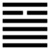

Hỏa Thiên Đại Hữu (大有 dà yǒu)
Đã cộng đồng với mọi người thì mọi người về với mình, mà sở hữu của mình cũng lớn, cho nên sau quẻ Đồng nhân, tới quẻ Đại hữu (có lớn).
Thoán từ:
大有: 元亨．
Đại hữu: Nguyên hanh.
Dịch: Có lớn thì rất hanh thông.
Giảng: ☲ ở trên Càn là lửa ở trên trời, chiếu sáng mọi vật như vậy là “có lớn” Ly lại có nghĩa là văn minh, Càn là cương kiện, gồm cả văn minh và cương kiện cho nên rất hanh thông.
Theo Thoán truyện: Còn một cách giảng nữa: quẻ này chỉ có một hào âm, nó thống lĩnh quần dương, 5 hào dương đều theo nó, có nghĩa là mọi người về với nó, mà nó được “có lớn”. Sở dĩ nó thống lĩnh được vì nó ở ngôi tôn mà lại đắc trung. Nó ứng hợp với hào 2, dương ở giữa quẻ Càn, như vậy nó vừa văn minh vừa cương kiện, ứng với trời (Càn) mà hành động đúng với thời.
Đại tượng truyện khuyên: người quân tử trong quẻ này phải ngăn đón ngay điều dữ khi nó chưa phát hiện, và biểu dương điều tốt khi nó còn mập mờ để thuận mệnh tốt của trời (át ác dương thiện, thuận thiên hưu mệnh: chữ hưu ở đây là tốt).
Ý nghĩa các hào:
1.
初九: 无交害, 匪咎; 艱則无咎．
Sơ cửu: Vô giao hại, phỉ cữu; nan tắc vô cửu.
Dịch: Hào 1. dương : chưa làm việc gì tai hại, chưa có lỗi; nhưng phải (cẩn thận) cư xử như gặp lúc gian nan thì mới khỏi lỗi.
Giảng: Đại hữu là có lớn. Hào 1 như con một nhà giàu sang, còn trẻ, chưa làm gì tai hại thì chưa có tội, nhưng vì là con nhà giàu, ít người ưa, nếu lại kiêu căng xa xỉ thì sẽ gây oán ghét, cho nên Hào từ khuyên sống trong cảnh gian nan thì mới khỏi tội.
2.
九二: 大車以載, 有攸往, 无咎．
Cửu nhị: đại xa dĩ tái, hữu du vãng, vô cửu.
Dịch: Hào 2, dương : xe lớn chở nặng, đi chốn nào (ý nói làm gì) cũng được, không có lỗi.
Giảng: Hào này tốt nhất trong quẻ : dương cương mà đắc trung, vừa có tài vừa khiêm tốn, được hào 5, âm ở trên ứng hợp, như được vua hết sức tin dùng sẽ thành công, cho nên ví với cỗ xe lớn chở nặng đi đường xa, đâu cũng tới được.
3.
九三: 公用亨于天子, 小人弗克．
Cửu tam: Công dụng hưởng vu thiên tử, tiểu nhân phất khắc.
Dịch: Hào 3, dương : như bậc công (hầu) mở tiệc mời thiên tử hạng tiểu nhân không đương nổi việc đó.
Giảng: Thời xưa chữ [ 亨 ] đọc là hanh (nghĩa là hanh thông) mà cũng đọc là hưởng) nghĩa là hưởng dụng, dâng, yến tiệc, lễ lớn) Chu Hi hiểu là triều hiến. R.Wilhem hiểu là đem đất đai của cải dâng thiên tử, hoặc cho dân chúng.
Chúng tôi theo Phan Bội Châu mà dịch như trên. Hào 3 này dương cương đắc chính, đứng trên cùng nội quái, cho nên ví với một bậc công; ở vào thời Đại hữu tất có nhiều đất đai, nhân dân; nên bậc thiên tử cũng nể, tới dự tiệc do vị công đó đãi. Những phải là người quân tử, có đức hạnh, không kiêu, mới làm như vậy được; còn hàng tiểu nhân, thấy thiên tử tới nhà mình càng kiêu căng, xa xỉ thì không đương nổi danh dự đó, mà chỉ hại thôi (tiểu nhân hại dã – lời Tiểu tượng truyện)
4.
九四: 匪其彭, 无咎．
Cửu tứ: phỉ kỳ bành, vô cữu.
Dịch: Hão, dương: đừng làm ra vẻ thịnh vượng (khoe của, sống sang quá) thì không có lỗi.
Giảng: Chữ bành [ 彭 ] ở đây, Trình tử hiểu là thịnh vượng; Phan Bội Châu dẫn câu “Hành nhân bành bành” trong Kinh Thi mà hiểu là rầm rộ. Chúng tôi châm chước hai nghĩa đó mà dịch như trên.
Hào này ở địa vị cao, gần hào 5, mà bất trung, bất chính, e có họa tới nơi, nên Hào từ khuyên phải khiêm tốn, tiết kiệm. Tiểu tượng truyện cũng khuyên phải phân biệt thị phi họa phúc cho rành thì mới khỏi lỗi.
5.
六五: 厥孚交如, 威如, 吉．
Lục ngũ: quyết phu giao như, uy như, cát.
Dịch: Hào 5, âm: Lấy đức tin, chí hành mà giao thiệp, và phải có uy thì tốt.
Giảng: Hào này ở vị chí tôn, đượccả 5 hào dương theo, nên phải đem đức tin, lòng chí thành mà đối đãi với người dưới. Nhưng vì là âm, nên ngại rằng quá nhu, nên Hào từ khuyên phải có chút uy mới được.
Tiểu tượng truyện cơ hồ hiểu khác, bảo phải dùng uy vũ, đừng khinh dị mà phải phòng bị đạo tắc (uy như chi cát, dị nhi vô bị dã).
6.
上九: 自天祐之, 吉, 无不利．
Thượng cửu: tự thiên hựu chi, cát, vô bất lợi.
Dịch: hào trên cùng, dương : tự trời giúp cho, tốt, không có gì mà chẳng lợi.
Giảng: Ở thời Đại hữu, thịnh trị, hào dương cương này ở trên cùng mà chịu hạ mình theo hào 5, chỉ vì 5 có đức thành tín; như vậy là không kiêu, tuy thịnh mà không đầy tràn, nên được trời giúp cho, hóa tốt, chứ lẽ thường hào cuối cùng, Đại hữu đã đến màn cuối, khó mà tốt được.
Khổng tử đọc tới hào này bảo: “Trời sở dĩ giúp cho là vì thuận với đạo trời; người sở dĩ giúp cho là vì có lòng thành tín”. Ông muốn nói hào 5 được các hào khác giúp là vì có lòng thành tín; còn hào trên cùng được trời giúp vì thuận với đạo trời: trọng người hiền (hào 5) không kiêu.
Quẻ này khuyên chúng ta sống trong cảnh giàu có, nên khiêm, kiệm: giao thiệp với người, nên chí thành.
Phan Bội Châu nhận xét rằng trong 64 quẻ, không quẻ nào tốt đều như quẻ này: hào 1, 2, 3 đều không có lỗi, hào 4 được hanh thông, hào 5 tốt, hào 6 đã tốt hơn nữa, “không có gì mà chẳng lợi”. Ngay đến quẻ Càn, quẻ Thái hào cuối cùng cũng xấu, kém quẻ này. Đại hữu chính là thời thịnh trị sau thời đại đồng.